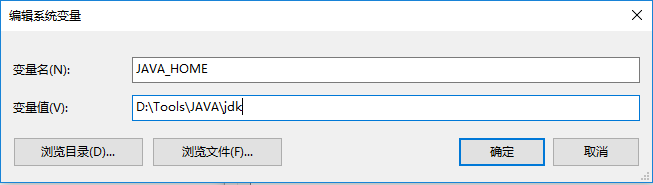
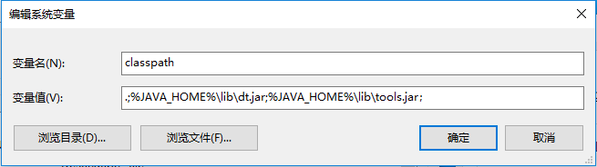
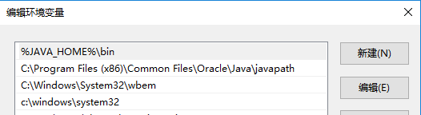
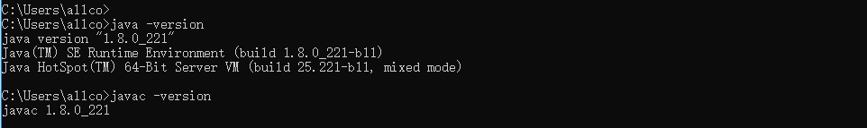

1、下载JDK
下载地址
https://www.oracle.com/technetwork/java/javase/downloads/index.html
2、安装JDK
傻瓜式的安装，一直点击“下一步”直至完成。
3、配置环境
新建JAVA_HOME环境变量

新建classpath环境变量

新增Path变量

4、查看是否安装成功
cmd中输入java -version 查看java版本
输入javac -version查看javac 版本

5、什么是JDK、JRE
JRE：java的运行环境，其中包含java运行所需的虚拟机JVM。
JDK：java的开发工具包，包含了JRE、编译工具、打包工具等，为了开发人员开发Java程序。